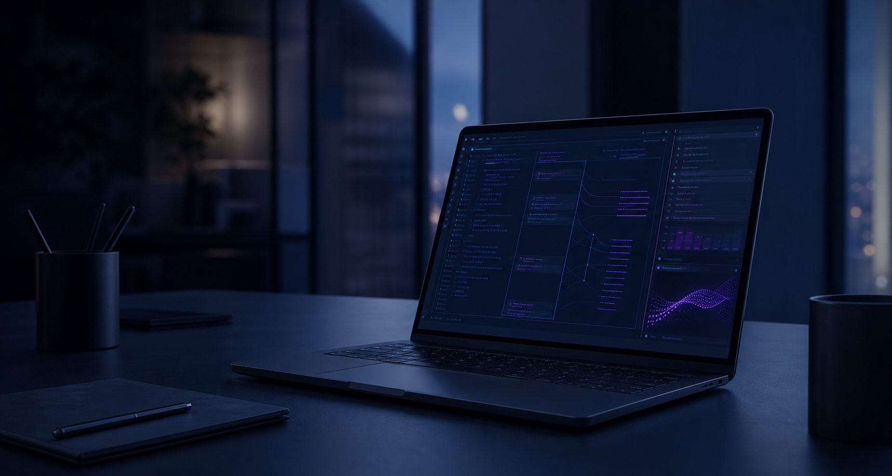

01
Map the repository
Build a repository-aware index while respecting Git ignores and excluding generated, dependency, and local-state files.
Private beta · local-first AppSec
Bugbee gives engineering teams a quieter place to investigate application risk. It runs close to your code, keeps the evidence with the finding, and leaves the decision with people who know the system.
For repositories you are authorized to assess. Bugbee does not exploit systems or apply changes on its own.

Security analysis that stays close to the code.
A practical loop
Bugbee combines local analysis with a focused review workflow. It will not make security effortless, but it can make the next decision clearer.
01
Build a repository-aware index while respecting Git ignores and excluding generated, dependency, and local-state files.
02
Run deterministic rules, secrets detection, and scoped taint analysis across Python, JavaScript, TypeScript, Go, PHP, and Java.
03
Score findings, keep a local review queue, and export confirmed work as SARIF for the systems your team already uses.
Built for real repositories
Bugbee redacts secrets before preparing model-bound content and blocks sensitive paths by policy.
Bring an OpenAI-compatible endpoint, Ollama, or Anthropic API for optional review—not as a substitute for local analysis.
Risk and evidence scores, review status, and stable finding identities help teams revisit decisions with context.
Private beta
We are opening access gradually with teams who want a thoughtful, local-first security workflow. The beta is intentionally small while we learn where the product is most useful.
WHAT TO EXPECT
Access is currently by invitation.